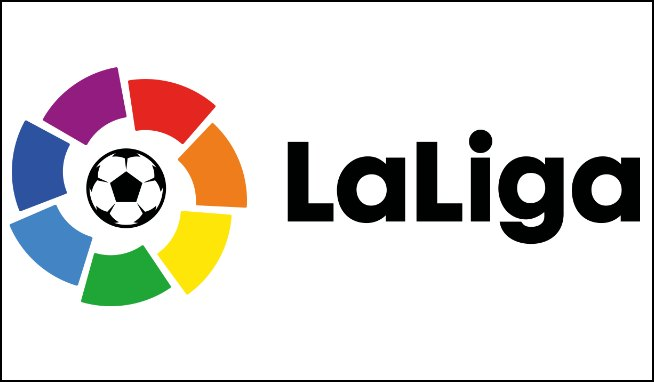
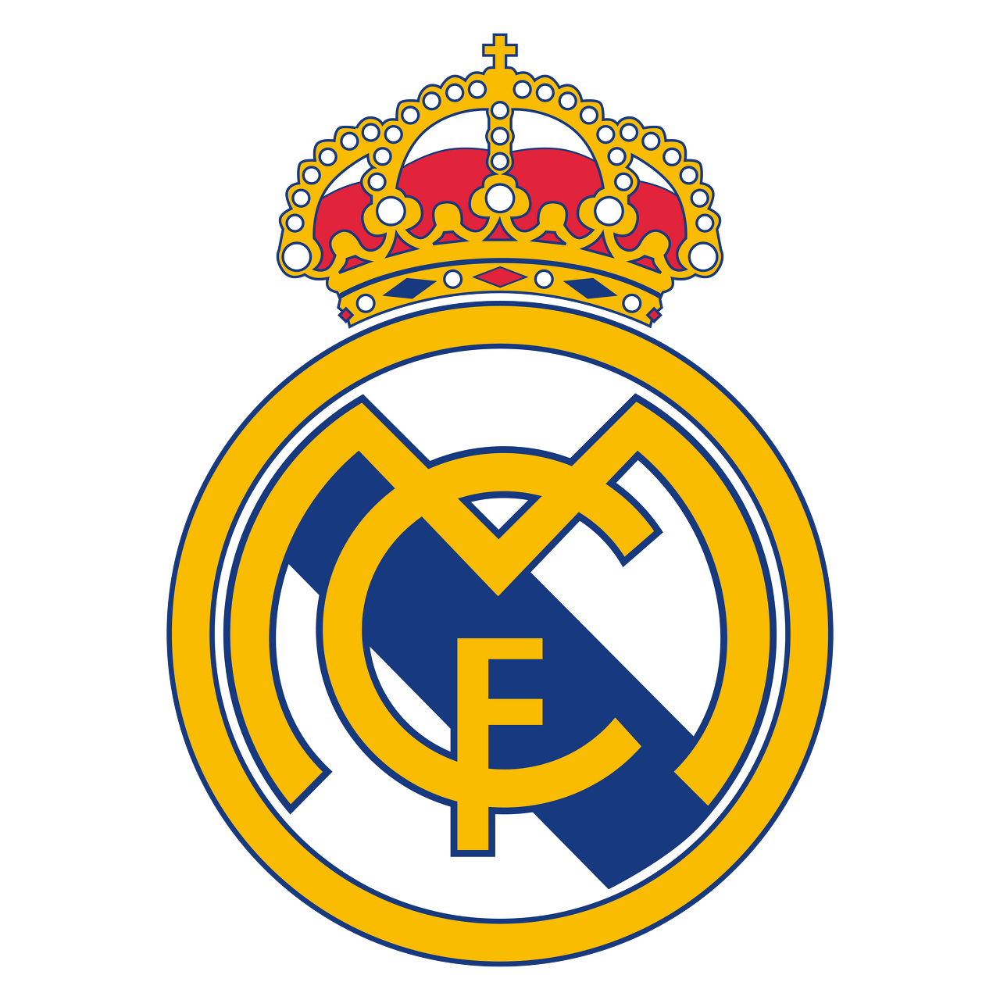
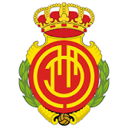
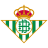

라리가

프리메라 디비시온은 흔히 라리가 혹은 협찬사의 명칭을 따 라리가 산탄데르로 알려진 스페인 축구 리그 시스템에서 최상위에 위치한 프로 축구 리그이다.

-레알 마드리드:
레알 마드리드 클루브 데 푸트볼은 흔히 레알 마드리드 혹은 스페인 밖에서 줄여서 레알 로 알려진 프로 축구 구단
으로 스페인의 마드리드 지방 마드리드를 연고로 한다. 1902년 마드리드 축구단으로 창단한 이 구단은 전통적으로 백색 주 유니폼을 입었다.
 -바르셀로나:
푸트볼 클루브 바르셀로나는 흔히 바르셀로나 혹은 줄여서 바르사로 알려진 프로 축구단으로, 스페인 카탈루냐 주 바르셀로나를 연고로
-바르셀로나:
푸트볼 클루브 바르셀로나는 흔히 바르셀로나 혹은 줄여서 바르사로 알려진 프로 축구단으로, 스페인 카탈루냐 주 바르셀로나를 연고로
하며, 스페인 축구 1부 리그인 라 리가에 소속되어 있다.

-마요르카:
RCD 마요르카는 마요르카 섬에 있는 손 모시 경기장을
홈 구장으로 하는 스페인의 축구 클럽이다. 이 축구단은 1916년 창단되었다.

-베티스:
레알 베티스 발롬피에는 줄여서 레알 베티스나 베티스로 알려진
스페인 안달루시아 주 세비야 연고의 프로 축구 구단이다.